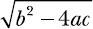

Ahora que hemos aprendido algunos de los conceptos básicos, podemos combinarlos con las sentencias condicionales y de bucle de Python para hacer algunos programas un poco más avanzados y útiles.
Cuando un entero distinto de cero, a, divide a otro entero, b, dejando un resto 0, se dice que a es un factor de b. Como ejemplo, 2 es un factor de todos los enteros pares. Podemos escribir una función como la siguiente para averiguar si un entero distinto de cero, a, es factor de otro entero, b:
>>> def is_factor(a, b):
if b % a == 0:
return True
else:
return False
Utilizamos el operador % introducido anteriormente en este capítulo para calcular el resto. Si alguna vez te planteas una pregunta como "¿Es 4 un factor de 1024?", puedes utilizar la función is_factor():
>>> is_factor(4, 1024)
True
Para cualquier número entero positivo n, ¿cómo encontramos todos sus factores positivos? Para cada uno de los enteros entre 1 y n, comprobamos el resto tras dividir n por ese entero. Si queda un resto de 0, es un factor. Utilizaremos la función range() para escribir un programa que recorra cada uno de esos números entre 1 y n.
Antes de escribir el programa completo, veamos cómo funciona range(). Un uso típico de la función range() tiene este aspecto:
>>> for i in range(1, 4):
print(i)
1
2
3
Aquí, hemos creado un bucle for y le hemos dado dos argumentos a la función rango. La función range() parte del número entero indicado como primer argumento (el valor de inicio) y continúa hasta el número entero justo anterior al indicado por el segundo argumento (el valor de parada). En este caso, le hemos dicho a Python que imprima los números de ese rango, empezando por el 1 y parando en el 4. Ten en cuenta que esto significa que Python no imprime el 4, por lo que el último número que imprime es el anterior al valor de parada (3). También es importante tener en cuenta que la función range() sólo acepta enteros como argumentos.
También puedes utilizar la función range() sin especificar el valor inicial, en cuyo caso se supone que es 0. Por ejemplo:
>>> for i in range(5):
print(i)
0
1
2
3
4
La diferencia entre dos enteros consecutivos producida por la función range() se conoce como valor de paso. Por defecto, el valor de paso es 1. Para especificar un valor de paso diferente, especifícalo como tercer argumento (el valor de inicio no es opcional cuando especificas un valor de paso). Por ejemplo, el siguiente programa imprime los números impares inferiores a 10:
>>> for i in range(1,10,2):
print(i)
1
3
5
7
9
Bien, ahora que hemos visto cómo funciona la función range(), estamos preparados para ver un programa de cálculo de factores. Como estoy escribiendo un programa bastante largo, en lugar de escribir este programa en el prompt interactivo de IDLE, lo escribo en el editor de IDLE. Puedes iniciar el editor seleccionando Archivo▸Nuevaventana en IDLE. Observa que empezamos comentando nuestro código con tres comillas simples rectas ('). El texto entre esas comillas no será ejecutado por Python como parte del programa; es sólo un comentario para nosotros, los humanos.
'''
Find the factors of an integer
'''
def factors(b):
➊ for i in range(1, b+1):
if b % i == 0:
print(i)
if __name__ == '__main__':
b = input('Your Number Please: ')
b = float(b)
➋ if b > 0 and b.is_integer():
factors(int(b))
else:
print('Please enter a positive integer')
La función factors() define un bucle for que itera una vez por cada entero entre 1 y el entero de entrada en ➊ utilizando la función range(). Aquí, queremos iterar hasta el entero introducido por el usuario, b, por lo que el valor de parada se indica como b+1. Para cada uno de estos enteros, i, el programa comprueba si divide el número introducido sin resto y lo imprime en caso afirmativo.
Cuando ejecutes este programa (seleccionandoEjecutar▸Módulo), te pedirá que introduzcas un número. Si tu número es un entero positivo, se imprimen sus factores. Por ejemplo:
Your Number Please: 25
1
5
25
Si introduces un número no entero o un número entero negativo, el programa imprime un mensaje de error pidiéndote que introduzcas un número entero positivo:
Your Number Please: 15.5
Please enter a positive integer
Este es un ejemplo de cómo podemos hacer que los programas sean más fáciles de usar, comprobando siempre la entrada no válida en el propio programa. Como nuestro programa sólo sirve para encontrar los factores de un entero positivo, comprobamos si el número introducido es mayor que 0 y es un entero utilizando el método is_integer() ➋ para asegurarnos de que la entrada es válida. Si la entrada no es un entero positivo, el programa imprime una instrucción fácil de usar en lugar de un gran mensaje de error.
Considera tres números, a, b y n, donde n es un entero, tales que
a × n = b.
Podemos decir aquí que b es el enésimo múltiplo de a. Por ejemplo, 4 es el 2º múltiplo de 2, y 1024 es el 512º múltiplo de 2.
Una tabla de multiplicar de un número enumera todos los múltiplos de ese número. Por ejemplo, la tabla de multiplicar del 2 tiene este aspecto (aquí se muestran los tres primeros múltiplos):
2 × 1 = 2
2 × 2 = 4
2 × 3 = 6
Nuestro siguiente programa genera el número de la multiplicación hasta 10 para cualquier número introducido por el usuario. En este programa, utilizaremos el método format() con la función print() para que la salida del programa tenga un aspecto más agradable y legible. Por si no lo has visto antes, te explico brevemente cómo funciona.
El método format() te permite introducir etiquetas y configurarlas para que se impriman en una cadena agradable y legible, con un formato adicional alrededor. Por ejemplo, si tuviera los nombres de todas las frutas que compré en el supermercado con etiquetas separadas creadas para cada una y quisiera imprimirlas para formar una frase coherente, podría utilizar el método format() de la siguiente manera:
>>> item1 = 'apples'
>>> item2 = 'bananas'
>>> item3 = 'grapes'
>>> print('At the grocery store, I bought some {0} and {1} and {2}'.format(item1, item2, item3))
At the grocery store, I bought some apples and bananas and grapes
Primero, creamos tres etiquetas (item1, item2, y item3), cada una referida a una cadena diferente (apples, bananas, y grapes). A continuación, en la función print(), escribimos una cadena con tres marcadores de posición entre llaves: {0}, {1}, y {2}. Seguimos con .format(), que contiene las tres etiquetas que hemos creado. Esto le dice a Python que rellene esos tres marcadores de posición con los valores almacenados en esas etiquetas en el orden indicado, de modo que Python imprime el texto con {0} sustituido por la primera etiqueta, {1} sustituido por la segunda etiqueta, y así sucesivamente.
No es necesario que las etiquetas apunten a los valores que queremos imprimir. También podemos simplemente escribir los valores en .format(), como en el siguiente ejemplo:
>>> print('Number 1: {0} Number 2: {1} '.format(1, 3.578))
Number 1: 1 Number 2: 3.578
Ten en cuenta que el número de marcadores de posición y el número de etiquetas o valores deben ser iguales.
Ahora que hemos visto cómo funciona format(), estamos preparados para echar un vistazo al programa de nuestra impresora de tablas de multiplicar:
'''
Multiplication table printer
'''
def multi_table(a):
➊ for i in range(1, 11):
print('{0} x {1} = {2}'.format(a, i, a*i))
if __name__ == '__main__':
a = input('Enter a number: ')
multi_table(float(a))
La función multi_table() implementa la funcionalidad principal del programa. Toma como parámetro el número para el que se imprimirá la tabla de multiplicar, a. Como queremos imprimir la tabla de multiplicar del 1 al 10, tenemos un bucle for en ➊ que itera sobre cada uno de estos números, imprimiendo el producto de sí mismo y el número, a.
Cuando ejecutas el programa, te pide que introduzcas un número, y el programa imprime su tabla de multiplicar:
Enter a number : 5
5.0 x 1 = 5.0
5.0 x 2 = 10.0
5.0 x 3 = 15.0
5.0 x 4 = 20.0
5.0 x 5 = 25.0
5.0 x 6 = 30.0
5.0 x 7 = 35.0
5.0 x 8 = 40.0
5.0 x 9 = 45.0
5.0 x 10 = 50.0
¿Ves qué bonita y ordenada parece esa tabla? Eso es porque hemos utilizado el método .format() para imprimir la salida según una plantilla legible y uniforme.
Puedes utilizar el método format() para controlar aún más cómo se imprimen los números. Por ejemplo, si quieres números con sólo dos decimales, puedes especificarlo con el método format(). Aquí tienes un ejemplo:
>>> '{0}'.format(1.25456)
'1.25456'
>>> '{0:.2f}'.format(1.25456)
'1.25'
La primera sentencia de formato anterior simplemente imprime el número exactamente como lo hemos introducido. En la segunda sentencia, modificamos el marcador de posición a {0:.2f}, que significa que sólo queremos dos números después del punto decimal, con el f indicando un número de coma flotante. Como puedes ver, en la siguiente salida sólo hay dos números después del punto decimal. Ten en cuenta que el número se redondea si hay más números después del punto decimal de los que has especificado. Por ejemplo:
>>> '{0:.2f}'.format(1.25556)
'1.26'
Aquí, 1,25556 se redondea a la centésima más próxima y se imprime como 1,26. Si utilizas .2f y el número que estás imprimiendo es un entero, se añaden ceros al final:
>>> '{0:.2f}'.format(1)
'1.00'
Se añaden dos ceros porque especificamos que debíamos imprimir exactamente dos números después del punto decimal.
El Sistema Internacional de Unidades define siete magnitudes básicas. Éstas se utilizan para derivar otras cantidades, denominadas cantidades derivadas. La longitud (incluidas la anchura, la altura y la profundidad), el tiempo, la masa y la temperatura son cuatro de las siete magnitudes básicas. Cada una de estas cantidades tiene una unidad de medida estándar: metro, segundo, kilogramo y kelvin, respectivamente.
Pero cada una de estas unidades de medida estándar tiene también múltiples unidades de medida no estándar. Estás más familiarizado con que la temperatura se indique como 30 grados Celsius o 86 grados Fahrenheit que como 303,15 kelvin. ¿Significa eso que 303,15 kelvin es tres veces más caliente que 86 grados Fahrenheit? De ninguna manera. No podemos comparar 86 grados Fahrenheit con 303,15 kelvin sólo por sus valores numéricos, porque están expresados en unidades de medida distintas, aunque midan la misma magnitud física: la temperatura. Sólo puedes comparar dos medidas de una magnitud física cuando están expresadas en la misma unidad de medida.
Las conversiones entre diferentes unidades de medida pueden ser complicadas, y por eso a menudo se te pide que resuelvas problemas que implican la conversión entre diferentes unidades de medida en el instituto. Es una buena forma de poner a prueba tus conocimientos matemáticos básicos. Pero Python también tiene muchas habilidades matemáticas y, a diferencia de algunos estudiantes de bachillerato, ¡no se cansa de calcular números una y otra vez en bucle! A continuación, exploraremos la escritura de programas que realicen esas conversiones de unidades por ti.
Empezaremos por la longitud. En Estados Unidos y el Reino Unido se suelen utilizar pulgadas y millas para medir la longitud, mientras que en la mayoría de los demás países se utilizan centímetros y kilómetros.
Una pulgada equivale a 2,54 centímetros, y puedes utilizar la operación de multiplicación para convertir una medida en pulgadas a centímetros. Luego puedes dividir la medida en centímetros por 100 para obtener la medida en metros. Por ejemplo, así es como puedes convertir 25,5 pulgadas a metros:
>>> (25.5 * 2.54) / 100
0.6476999999999999
Por otra parte, una milla equivale aproximadamente a 1,609 kilómetros. Así que si ves que tu destino está a 650 millas, estás a 650 × 1,609 kilómetros:
>>> 650 * 1.609
1045.85
Ahora echemos un vistazo a la conversión de la temperatura: convertir la temperatura de Fahrenheit a Celsius y viceversa. La temperatura expresada en Fahrenheit se convierte en su valor equivalente en Celsius mediante la fórmula
F es la temperatura en Fahrenheit, y C es su equivalente en Celsius. Sabes que se dice que 98,6 grados Fahrenheit es la temperatura normal del cuerpo humano. Para hallar la temperatura correspondiente en grados Celsius, evaluamos la fórmula anterior en Python:
>>> F = 98.6
>>> (F - 32) * (5 / 9)
37.0
Primero, creamos una etiqueta, F, con la temperatura en Fahrenheit, 98,6. Después, evaluamos la fórmula para convertir esta temperatura a su equivalente en Celsius, que resulta ser 37,0 grados Celsius.
Para convertir la temperatura de Celsius a Fahrenheit, utilizarías la fórmula

Puedes evaluar esta fórmula de forma similar:
>>> C = 37
>>> C * (9 / 5) + 32
98.60000000000001
Creamos una etiqueta, C, con el valor 37 (la temperatura normal del cuerpo humano en Celsius). Luego, lo convertimos en Fahrenheit utilizando la fórmula, y el resultado es 98,6 grados.
Es una faena tener que escribir estas fórmulas de conversión una y otra vez. Escribamos un programa de conversión de unidades que haga las conversiones por nosotros. Este programa presentará un menú para que los usuarios puedan seleccionar la conversión que desean realizar, pedirá los datos pertinentes y, a continuación, imprimirá el resultado calculado. El programa se muestra a continuación:
'''
Unit converter: Miles and Kilometers
'''
def print_menu():
print('1. Kilometers to Miles')
print('2. Miles to Kilometers')
def km_miles():
km = float(input('Enter distance in kilometers: '))
miles = km / 1.609
print('Distance in miles: {0}'.format(miles))
def miles_km():
miles = float(input('Enter distance in miles: '))
km = miles * 1.609
print('Distance in kilometers: {0}'.format(km))
if __name__ == '__main__':
➊ print_menu()
➋ choice = input('Which conversion would you like to do?: ')
if choice == '1':
km_miles()
if choice == '2':
miles_km()
Este programa es un poco más largo que los otros, pero no te preocupes. En realidad es sencillo. Empecemos por ➊. Se llama a la función print_menu(), que imprime un menú con dos opciones de conversión de unidades. En ➋, se pide al usuario que seleccione una de las dos conversiones. Si la elección es 1 (kilómetros a millas), se llama a la función km_miles(). Si la elección es 2 (millas a kilómetros), se llama a la función miles_km(). En ambas funciones, primero se pide al usuario que introduzca una distancia en la unidad elegida para la conversión (kilómetros para km_miles() y millas para miles_km()). A continuación, el programa realiza la conversión utilizando la fórmula correspondiente y muestra el resultado.
Aquí tienes un ejemplo de ejecución del programa:
1. Kilometers to Miles
2. Miles to Kilometers
➊ Which conversion would you like to do?: 2
Enter distance in miles: 100
Distance in kilometers: 160.900000
Se pide al usuario que introduzca una elección en ➊. La elección se introduce como 2 (millas a kilómetros). A continuación, el programa pide al usuario que introduzca la distancia en millas a convertir en kilómetros e imprime la conversión.
Este programa sólo convierte entre millas y kilómetros, pero en un reto de programación posterior, ampliarás este programa para que pueda realizar conversiones de otras unidades.
¿Qué haces cuando tienes una ecuación como x + 500 - 79 = 10 y necesitas encontrar el valor de la variable desconocida, x? Reorganizas los términos de forma que sólo tengas las constantes (500, -79 y 10) en un lado de la ecuación y la variable(x) en el otro lado. El resultado es la siguiente ecuación: x = 10 - 500 + 79.
Encontrar el valor de la expresión de la derecha te da el valor de x, tu solución, que también se llama raíz de esta ecuación. En Python, puedes hacerlo de la siguiente manera:
>>> x = 10 - 500 + 79
>>> x
-411
Este es un ejemplo de ecuación lineal. Una vez que has reordenado los términos de ambos lados, la expresión es bastante sencilla de evaluar. En cambio, para ecuaciones como x2 +2x + 1 = 0, encontrar las raíces de x suele implicar evaluar una expresión compleja conocida como fórmula cuadrática. Tales ecuaciones se conocen como ecuaciones cuadráticas, generalmente expresadas como ax2 + bx + c = 0, donde a, b y c son constantes. La fórmula cuadrática para calcular las raíces es la siguiente:
Una ecuación cuadrática tiene dos raíces -dos valores de x para los que los dos lados de la ecuación cuadrática son iguales (aunque a veces estos dos valores pueden resultar ser el mismo). Esto se indica aquí mediante x1 y x2 en la fórmula cuadrática.
Comparando la ecuación x2 +2x + 1 = 0 con la ecuación cuadrática genérica, vemos que a = 1, b = 2 y c = 1. Podemos sustituir estos valores directamente en la fórmula cuadrática para calcular el valor de x1 y x2. En Python, primero almacenamos los valores de a, b y c como las etiquetas a, b y c con los valores adecuados:
>>> a = 1
>>> b = 2
>>> c = 1
Luego, considerando que ambas fórmulas tienen el término b2 - 4ac, definiremos una nueva etiqueta con D, tal que :
>>> D = (b**2 – 4*a*c)**0.5
Como puedes ver, evaluamos la raíz cuadrada de b2 - 4ac elevándola a la 0,5ª potencia. Ahora podemos escribir las expresiones para evaluar x1 y x2:
>>> x_1 = (-b + D)/(2*a)
>>> x_1
-1.0
>>> x_2 = (-b - D)/(2*a)
>>> x_2
-1.0
En este caso, los valores de ambas raíces son iguales, y si sustituyes ese valor en la ecuación x2 +2x + 1, la ecuación se evaluará a 0.
Nuestro siguiente programa combina todos estos pasos en una función roots(), que toma los valores de a, b y c como parámetros, calcula las raíces y las imprime:
'''
Quadratic equation root calculator
'''
def roots(a, b, c):
D = (b*b - 4*a*c)**0.5
x_1 = (-b + D)/(2*a)
x_2 = (-b - D)/(2*a)
print('x1: {0}'.format(x_1))
print('x2: {0}'.format(x_2))
if __name__ == '__main__':
a = input('Enter a: ')
b = input('Enter b: ')
c = input('Enter c: ')
roots(float(a), float(b), float(c))
Al principio, utilizamos las etiquetas a, b, y c para referenciar los valores de las tres constantes de una ecuación cuadrática. A continuación, llamamos a la función roots() con estos tres valores como argumentos (después de convertirlos a números en coma flotante). Esta función introduce a, b y c en la fórmula cuadrática, encuentra las raíces de esa ecuación y las imprime.
Cuando ejecutes el programa, pedirá al usuario que introduzca los valores de a, b y c correspondientes a una ecuación cuadrática de la que quiera hallar las raíces.
Enter a: 1
Enter b: 2
Enter c: 1
x1: -1.000000
x2: -1.000000
Intenta resolver algunas ecuaciones cuadráticas más con diferentes valores para las constantes, y el programa encontrará las raíces correctamente.
Lo más probable es que sepas que las ecuaciones cuadráticas también pueden tener números complejos como raíces. Por ejemplo, las raíces de la ecuación x2 + x + 1 = 0 son ambas números complejos. El programa anterior también puede encontrarlas. Intentémoslo ejecutando de nuevo el programa (las constantes son a = 1, b = 1 y c = 1):
Enter a: 1
Enter b: 1
Enter c: 1
x1: (-0.49999999999999994+0.8660254037844386j)
x2: (-0.5-0.8660254037844386j)
Las raíces impresas arriba son números complejos (indicados con j), y el programa no tiene ningún problema para calcularlas o mostrarlas.